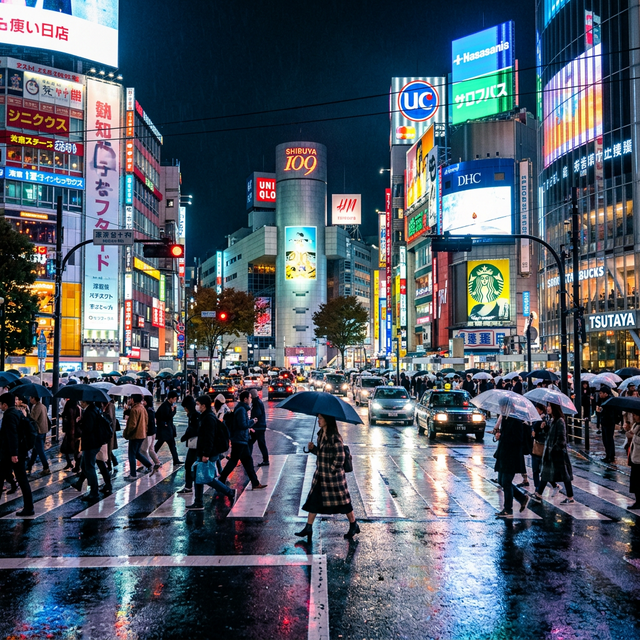

Europe — the continent of ancient castles, sun-drenched Mediterranean coastlines, vibrant cities, and culinary traditions perfected over millennia. It's also perceived as one of the most expensive destinations on Earth. But here's the secret that budget travelers have known for decades: Europe can be remarkably affordable if you know where to go, when to visit, and how to travel smart.
The NomadLens team has spent years perfecting the art of European budget travel, and in this comprehensive guide, we're sharing everything we've learned. From finding flights under $200 round-trip to discovering charming cities where a full day costs less than $40, this is your roadmap to an unforgettable European adventure without the five-figure price tag.
The Golden Rules of Budget European Travel
1. Timing Is Everything
The single most impactful decision you'll make is when to travel. European tourism follows predictable seasonal patterns, and understanding these can save you 40-60% on everything from flights to accommodation.
- Peak Season (June-August): Maximum prices, maximum crowds. Avoid unless you're visiting Scandinavia, where summer weather is essential.
- Shoulder Season (April-May, September-October): The sweet spot. Weather is excellent, prices are 30-50% lower, and you'll actually be able to enjoy attractions without hour-long queues.
- Off Season (November-March): Lowest prices, but many coastal and outdoor destinations are less enjoyable. However, cities like Prague, Budapest, and Vienna are magical in winter, with Christmas markets, thermal baths, and cozy café culture.
2. Flight Hacking Strategies
Budget airlines have transformed European travel economics. Here's how to find the cheapest flights:
- Use fare comparison tools: Google Flights, Skyscanner, and Kiwi.com allow you to search flexible dates and "everywhere" as a destination to find the cheapest options.
- Book 6-8 weeks in advance: Research consistently shows this is the sweet spot for European flights. Last-minute deals are increasingly rare.
- Consider alternative airports: Flying into Beauvais instead of Paris CDG, or Bergamo instead of Milan, can save $50-100 per flight.
- Budget carriers: Ryanair, EasyJet, Wizz Air, and Transavia offer fares from $15-40 within Europe. Pack light to avoid baggage fees that can exceed the ticket price.
3. Accommodation on a Budget
Accommodation typically represents 30-40% of travel costs. Here's how to minimize it:
- Hostels: Modern European hostels are nothing like their reputation. Many offer private rooms, co-working spaces, and social events. Budget $15-30/night in Western Europe, $8-15 in Eastern Europe.
- Guesthouses and B&Bs: Often cheaper than hotels with breakfast included. Particularly excellent in Italy, Spain, and Greece.
- House-sitting: Platforms like TrustedHousesitters offer free accommodation in exchange for pet or home care. Popular in the UK, France, and the Netherlands.
- University accommodation: Many European universities rent dormitory rooms to travelers during summer breaks at 50-70% below hotel rates.

The 8 Most Affordable European Destinations
1. Portugal — The Best Value in Western Europe
Portugal consistently ranks as Western Europe's most affordable destination. Lisbon and Porto offer world-class food, architecture, and nightlife at prices that feel practically Eastern European. A traditional Portuguese lunch (prato do dia) rarely exceeds $8, including drink. Historic tram rides, free walking tours, and stunning viewpoints (miradouros) provide entertainment without any cost.
Daily budget: $40-60 including accommodation, meals, and activities.
2. Bulgaria — Europe's Hidden Bargain
Sofia, Plovdiv, and the Black Sea coast offer incredible value. Bulgaria's capital has world-class museums, Ottoman-era architecture, and a booming food scene where a full meal costs $4-7. The Rila Monastery, nestled in the mountains, is one of Europe's most spectacular religious sites. Ski resorts like Bansko offer lift passes at a fraction of Alpine prices.
Daily budget: $25-40 including accommodation, meals, and activities.
3. Hungary — Thermal Baths and Culture
Budapest is one of Europe's most beautiful capitals, yet remarkably affordable. The iconic Széchenyi Thermal Baths cost $20 for a full day. The ruin bars of the Jewish Quarter serve drinks at $2-4. Street food — particularly lángos (fried dough) and kürtőskalács (chimney cake) — satisfies for under $3. The city's stunning Parliament building, illuminated at night, provides one of Europe's most breathtaking free views.
Daily budget: $30-45 including accommodation, meals, and activities.
4. Czech Republic — Medieval Charm
Prague is a living museum of Gothic, Baroque, and Art Nouveau architecture. While the Old Town can feel touristy, venture to neighborhoods like Vinohrady or Žižkov for authentic Czech experiences at local prices. A half-liter of world-class Czech beer costs $1.50-2 at local pubs. Day trips to Český Krumlov and Kutná Hora offer UNESCO World Heritage experiences without the capital's crowds.
Daily budget: $35-50 including accommodation, meals, and activities.
5. Greece — Islands on a Budget
Skip Santorini and Mykonos (unless visiting in October), and head to lesser-known islands like Milos, Naxos, or Ikaria. Ferry tickets between islands cost $15-40, and island guesthouses offer rooms from $30-50/night. Greek taverna meals — fresh seafood, salads, and local wine — rarely exceed $12 per person. The combination of ancient ruins, crystalline waters, and legendary hospitality makes Greece an extraordinary value destination.
Daily budget: $40-55 including accommodation, meals, and ferry transport.
6. Poland — Cultural Powerhouse
Kraków and Wrocław rival any Western European city in beauty and culture, at a fraction of the cost. Kraków's Main Square is Europe's largest medieval square, surrounded by cafes where a cappuccino costs $2. The Wieliczka Salt Mine and Auschwitz Memorial provide profoundly moving experiences. Polish cuisine — pierogi, bigos, żurek — is hearty, delicious, and incredibly cheap.
Daily budget: $25-40 including accommodation, meals, and activities.
7. Romania — Transylvanian Adventures
Bucharest, Brașov, and the painted monasteries of Bucovina offer experiences that rival Italy's cultural richness at Romanian prices. The Carpathian Mountains provide excellent hiking, and Transylvania's medieval fortified churches are UNESCO gems hidden in pastoral villages. Romanian trains are cheap and reliable, connecting major cities for $5-15.
Daily budget: $25-35 including accommodation, meals, and activities.
8. Spain — Affordable Regions
While Barcelona and Madrid have become expensive, southern Spain — Andalusia — remains remarkably affordable. Granada, Seville, and Córdoba offer Moorish palaces, flamenco, and tapas culture where many bars still serve free tapas with every drink ordered. A day in Granada, including the Alhambra and an evening of tapas-hopping, can cost as little as $35.
Daily budget: $40-55 including accommodation, meals, and activities.
Transportation: Moving Around Europe Cheaply
Getting between cities efficiently and affordably is key to budget travel. Here are your best options for 2026:
- FlixBus: Pan-European bus network with fares from $5-20 between major cities. WiFi, power outlets, and reliable scheduling make this the budget traveler's backbone.
- Eurail Pass: Still valuable for extensive travel across multiple countries, especially in Switzerland, Scandinavia, and Germany where train fares are high. Youth passes (under 27) offer significant discounts.
- BlaBlaCar: Carpooling platform widely used across France, Spain, and Italy. Fares are typically 50-70% less than train tickets.
- Overnight trains: Save a night's accommodation while covering distance. The European Sleeper network has expanded significantly, connecting major cities with comfortable couchette services.
Eating Well on a Budget
Food is one of the great pleasures of European travel, and eating well doesn't require spending big. Our best strategies include shopping at local markets for picnic supplies, eating the day's main meal at lunch (when many restaurants offer prix-fixe menus at 40% below dinner prices), and seeking out neighborhoods where locals actually eat rather than tourist-facing restaurant rows.
In Southern Europe, aperitivo culture offers free snacks with evening drinks. In Eastern Europe, canteen-style restaurants serve home-cooked meals for $3-5. Street food across the continent — crêpes in France, currywurst in Germany, börek in the Balkans — provides delicious, filling meals for under $5.
Final Thoughts
Budget travel in Europe isn't about deprivation — it's about making smart choices that let you travel longer, dig deeper, and experience more. The travelers who have the richest European experiences aren't those with the biggest budgets; they're those who engage with local culture, explore beyond tourist hotspots, and approach each destination with curiosity and flexibility.
Europe is waiting. Your budget is ready. Now go explore.